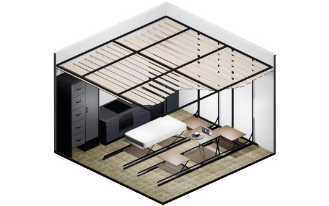
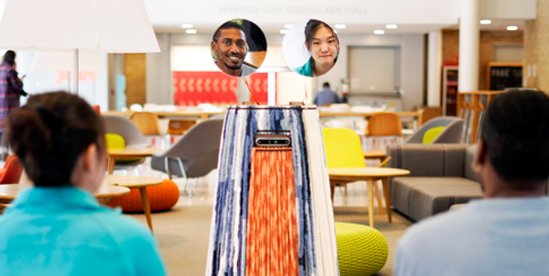

My contributions included study design, interviews, qualitative analysis, and physical prototyping.
Lab WebsiteSolutions
Three research prototypes explore different relationships between people and their surroundings.
- RobotRoom → A reconfigurable room explores how people want to control a compact living space.
- MirrorBot → A moving mirror invites people in a shared space to notice and interact with one another.
- DentAR → An augmented reality experience explores how customizable sights and sounds could ease sensory stress at the dentist.
RobotRoom
A reconfigurable room explores how people want to control a compact living space.

Read more: robotroom
January 2025 - Present
RobotRoom explores how small, reconfigurable spaces can adapt to diverse human needs through robotic transformation. This work contributes insights into the design space of reconfigurable environments and uncovers user perspectives on the future of adaptive, compact living.
I work with Sharmayne Lim and focus on exploring users’ preferred methods for controlling and interacting with RobotRoom and designing user-friendly interfaces. I conducted literature reviews on smart home control methods, brainstormed and sketched interaction modalities, and designed surveys to capture user preferences. I also analyzed the collected data to inform interface design decisions and supported physical prototyping and fabrication in a workshop setting.
Image Source: https://arl.human.cornell.edu/research_Robot_Surfaces.html
MirrorBot
A moving mirror invites people in a shared space to notice and interact with one another.

Read more: mirrorbot
January 2025 - August 2025
MirrorBot is a robotic mirror system designed to transform static public spaces into dynamic, interactive environments. By autonomously navigating and adjusting its reflective surface, Mirrorbot shifts between self-reflection and mutual recognition, encouraging spontaneous social interactions. Integrating mirrors as familiar architectural elements, the project explores how embodied, screen-free interfaces can foster connection and play in shared spaces.
I worked with Serena Guo and my contributions included designing the study protocol, facilitating sessions, and collecting data. I analyzed interview and video recordings, generating insights that informed the paper. I also organized a codebook that is supported by illustrative quotes.
Image Source: https://arl.human.cornell.edu/research-MirrorBot.html
DentAR
An augmented reality experience explores how customizable sights and sounds could ease sensory stress at the dentist.
Read more: dentar
July 2024 - December 2024
DentAR is an Augmented Reality (AR) experience designed to reduce anxiety in dental settings for individuals with Autism Spectrum Disorder (ASD) and Sensory Processing Disorder (SPD). Using a participatory design process that engaged occupational therapists, dentists, and caregivers, the project explored how sensory integration strategies could be applied to reshape the clinic environment. DentAR leverages customizable visual and auditory stimuli to modulate the sensory atmosphere, making dental visits more accessible and calming for individuals with heightened sensory sensitivity.
I worked with Serena Guo and my contributions included conducting a literature review on current research related to autism and sensory processing disorder; attending a pilot co-design session and suggesting improvements to the facilitation protocol; and assisting with participant recruitment. I contributed to data analysis by coding session recordings, refining the codebook, and summarizing participant insights. I analyzed qualitative data, summarized emotional needs, and supported design sketching.
More information: https://www.serenageguo.com/dentar